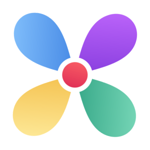

Wedone Web AppsTes outils, au même endroit.
Qu'est-ce qu'on fait aujourd'hui ?
Choisis simplement l'outil dont tu as besoin.
Sauvegarde de Wedone
Exportez vos données des quatre applications dans un seul fichier portable, ou restaurez une sauvegarde sur cet appareil.
La sauvegarde reste sur votre appareil jusqu’à ce que vous choisissiez où enregistrer le fichier.